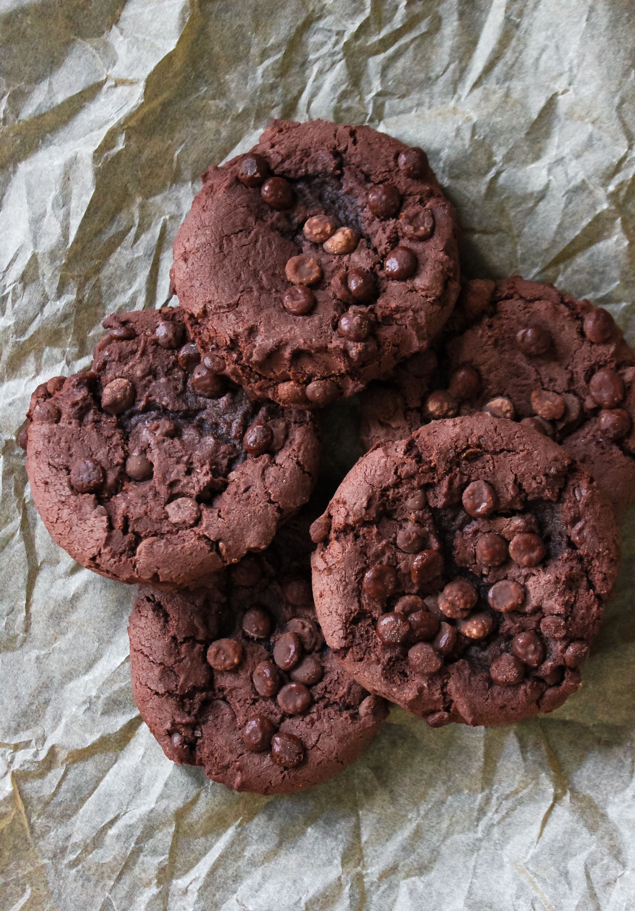

Back to Main Page
Brownie Cookie

Description
A brownie cookie is a cookie specifically made with the ingredients of a brownie, resulting in a fudgy and chocolatey treat.
Ingredients
- 1 (18.3 ounce) package brownie mix
- 1/3 cup vegetable oil
- 3 tablespoons all-purpose flour, or more as needed
- 2 large eggs
- 1 teaspoon vanilla extract
- 1/2 teaspoon kosher salt
- 1/2 cup semisweet chocolate chips
Instructions
- Gather all ingredients. Preheat the oven to 350 degrees F (175 degrees C) with racks positioned in middle and lower third. Line two baking sheets with parchment paper.
- Stir brownie mix, oil, 3 tablespoons of the flour, eggs, vanilla, and salt in a large bowl until just combined, adding up to 1 tablespoon more flour if dough is too loose; fold in chocolate chips.
- Drop dough by rounded tablespoons 2 inches apart onto prepared baking sheets.
- Bake in the preheated oven until cookies are just set, about 10 minutes, rotating pans to opposite racks halfway through. Let cool on baking sheets briefly before removing to a wire rack to cool completely and enjoy!